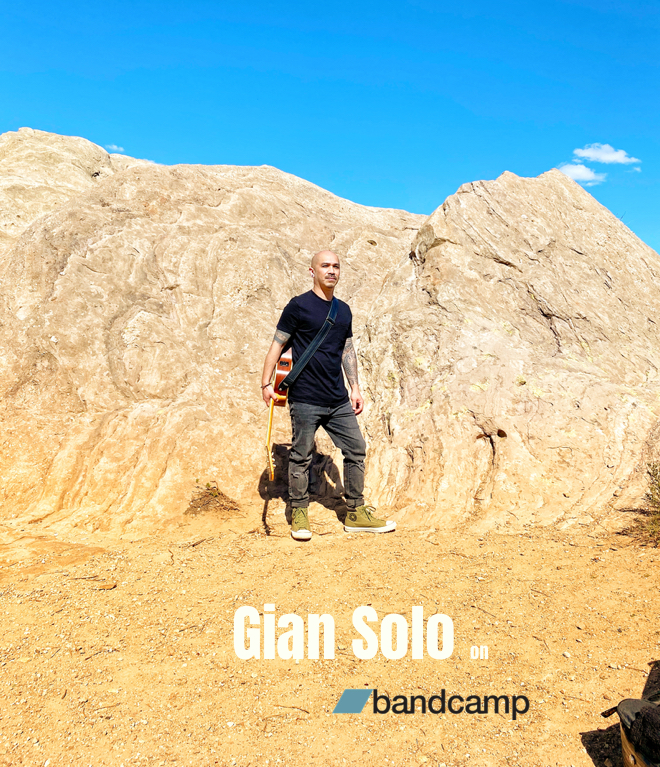

Photos


New Single "Come Back to Me" available 4/20/21.
To purchase and download, head over to Gian Solo's Bandcamp page.

Singer/Songwriter-Producer from North Hollywood, CA. After years of putting in work with multiple projects, Gian is going solo to present a different side of his musical self. Gian holds nothing back on his latest music and dives deep into the wide depth of his musical greatness and brevity.
This is Gian, free from any musical limitations.
“Embracing who you are and where you stand in life is something that takes time to accept. Growing older has made me see things in a different light and I am in a place where I feel that life is absolutely worth every single moment. Throughout life and all of its changes, so far, music has been there, changing, adapting, helping and giving me life, comfort and energy at times when I need it. It’s time to give back. The only way for me to do that is to create and release songs that do the same for people. Give life, comfort and energy back to the people. I’ve created music that inspires, drives and harnesses positivity, solidarity and happiness and I am ready to give back.”
Gian Solo's latest single, entitled "Come Back to Me," is set for release on 4/20/21 through Bandcamp.
"Come Back to Me" is a self-produced single by Gian Solo with ardent but honest lyrics that soar through a lush texture of natural acoustic background. The emotional energy of the song is carried by Gian's lyrics that tell the story of a person's longing for an ex-love from the past. This song was recorded, mixed and mastered at Gian's personal home studio.
Social
Gian’s social of choice is Instagram. He also has a Twitter account but calls Instagram home. Follow Gian on Instagram now and experience acoustic covers, blazing solos and live performances.